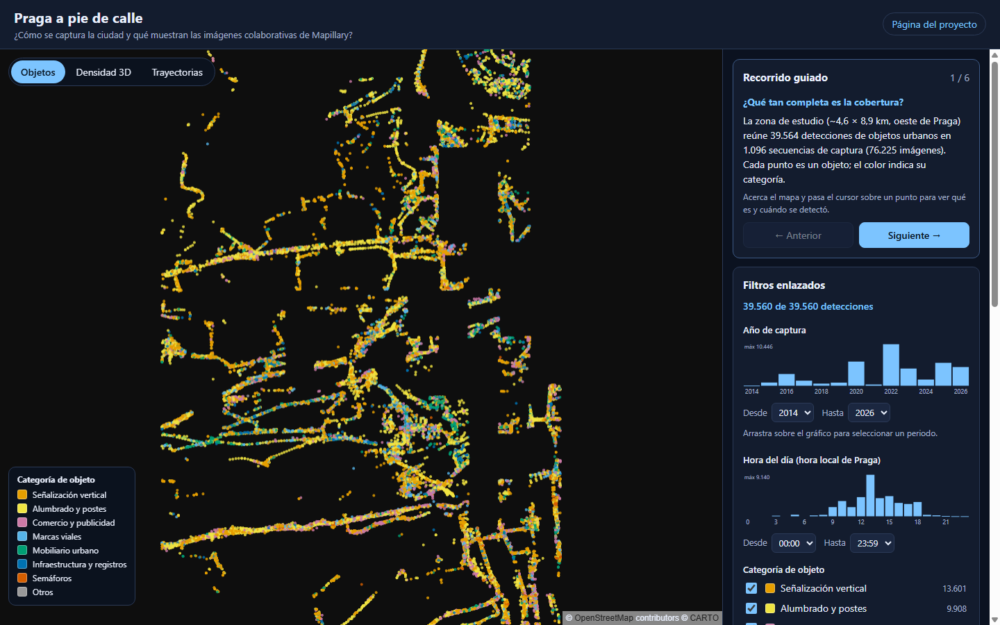
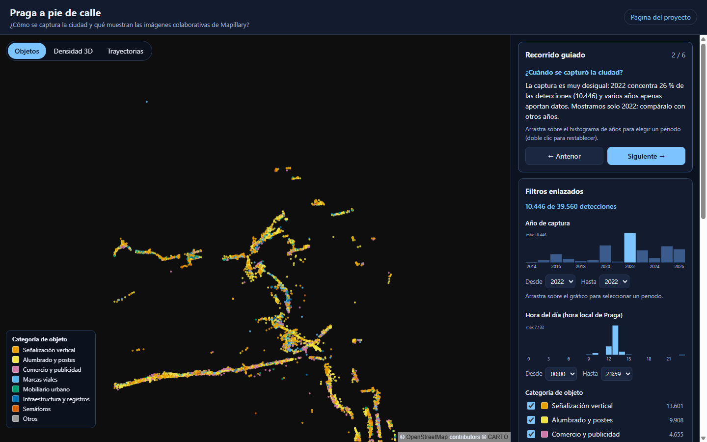
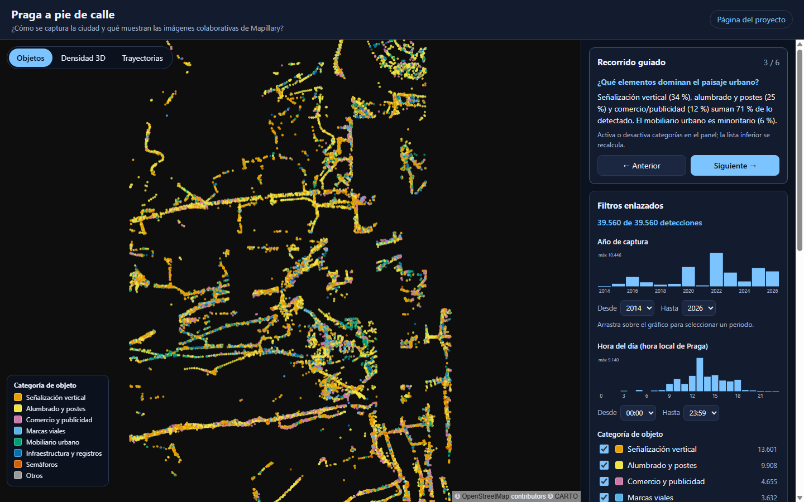
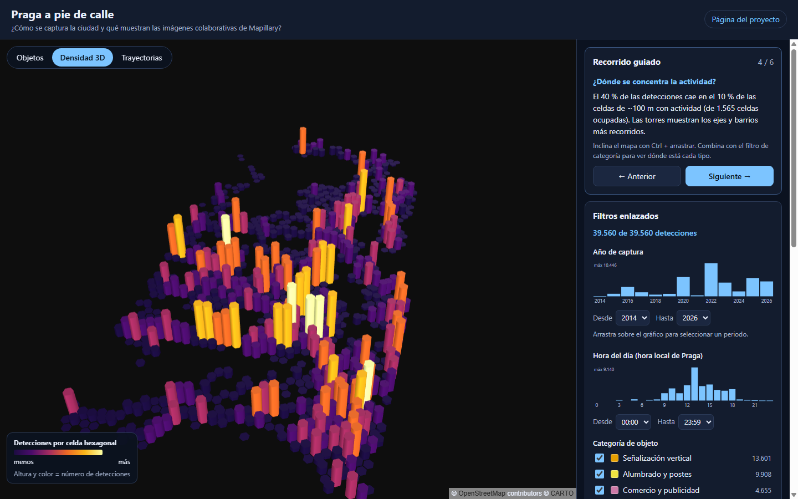
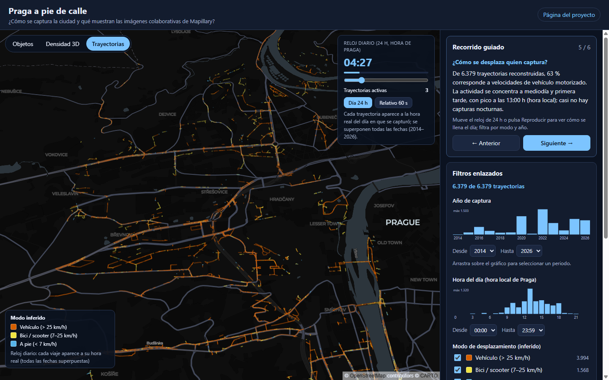

¿Qué dicen las imágenes colaborativas de Mapillary sobre quién captura la ciudad?
[Integrantes del equipo]
Presentación del proyecto · Semana 12
El problema
Usamos los datos colaborativos como si describieran la ciudad… pero describen, sobre todo, a quien la captura.
Cada dato depende de quién captura, cuándo y con qué dispositivo.
Audiencia: analistas y estudiantes de datos geoespaciales que evalúan datos colaborativos.
Pregunta guía: ¿puedo confiar en estos datos para mi análisis?
Praga a pie de calle2
Los datos
39.564
detecciones de objetos urbanos · 277 clases
6.379
trayectorias reconstruidas
76.225
imágenes en la zona (2003–2026)
Fuente: Mapillary API v4 (map_features e images), licencia CC BY-SA.
Zona: oeste de Praga, ~4,6 × 8,9 km (lon 14,350–14,415). Límite: 2 de 5 lotes de detecciones descargados.
Privacidad: sin nombres de contribuyentes; los dispositivos se agregan por fabricante.
Praga a pie de calle3
De la API a la pantalla
Todo el pipeline es reproducible con los scripts 01–05 del repositorio.
Praga a pie de calle4
La aplicación

Tres capas
ObjetosDensidad 3DTrayectorias
Filtros enlazados
Año · hora · categoría · modo. Cada histograma muestra qué se pierde al estrechar la selección.
Recorrido guiado
Seis preguntas; cada paso fija la vista y muestra un hallazgo calculado.
Praga a pie de calle5
¿Cuándo se capturó la ciudad?

2022 concentra el 26,4 % de las detecciones; 2020, el 15,4 %; 2025, el 14,6 %.
Un solo año filtrado revela una campaña que recorre pocos ejes. 2014 y 2021 casi no aportan.
Praga a pie de calle6
¿Qué elementos dominan?

Señalización y alumbrado suman 59,4 %. El mobiliario urbano es solo el 6,2 %.
Praga a pie de calle7
¿Dónde se concentra la actividad?

39,5 %
de las detecciones cae en el 10 % de las celdas de ~100 m
1.565 celdas ocupadas. Hexágonos 3D: altura y color = número de detecciones.
Praga a pie de calle8
¿Cómo se desplaza quien captura?

62,6 % vehículo · 24,6 % bici/scooter · 12,8 % a pie (inferido por velocidad)
Trayectorias por hora de inicio. Pico a las 13:00 h; casi nada de noche.
Reloj de 24 h: cada viaje aparece a la hora real en que se capturó (todas las fechas superpuestas).
Praga a pie de calle9
Hallazgo transversal
El volumen de imágenes y el de detecciones no coinciden en el tiempo.
2020
15.259
imágenes · 6.076 detecciones ≈ 0,4 detecciones por imagen
2022
7.770
imágenes · 10.446 detecciones ≈ 1,3 detecciones por imagen
¿Dispositivo, procesamiento o ruta? Pregunta abierta para la versión final.
Praga a pie de calle10
Decisiones de diseño
Mapa + panel: el contexto espacial es la pregunta central.
Hexágonos 3D en lugar de mapa de calor: conservan las diferencias de magnitud.
Crossfilter: cada histograma ignora su propio filtro para mostrar qué se pierde.
Color: Okabe-Ito (seguro para daltonismo) para categorías; inferno para densidad.
Recorrido guiado: convierte el panel de controles en una narrativa.
Accesibilidad: teclado, ARIA, movimiento reducido y diseño adaptable.
Praga a pie de calle11
Límites y lectura prudente
Cobertura geográfica parcial de las detecciones (lotes 3–5 pendientes).
Las trayectorias se reconstruyen desde detecciones, no desde la secuencia completa de fotos.
El modo de transporte es una inferencia por velocidad.
El reloj de 24 h superpone todas las fechas: muestra el ciclo diario, no un día concreto.
Pocas campañas dominan algunos años: sesgo de quién captura.
Praga a pie de calle12
Conclusión
Mapillary describe mejor a quien captura que a la ciudad capturada. Antes de leer una ciudad en datos colaborativos, pregunta: ¿quién, cuándo y con qué?
Próximos pasos: completar los lotes 3–5 · explicar la discrepancia por dispositivo · comparar dos años · pruebas con usuarios · paper, videos y póster.